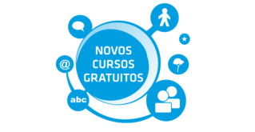

Participe!
O projeto Esporte e Cidadania oferece várias opções de cursos on-line nos Centros Olímpicos de Ceilândia, Riacho Fundo I, Samambaia e São Sebastião. As vagas são abertas para a comunidade, com escolaridade mínima de 7º ano do ensino fundamental. Aproveite as aulas e aumente as suas chances de crescimento pessoal e profissional! As inscrições devem ser feitas pessoalmente nos centros.

O projeto
O projeto Esporte e Cidadania é uma parceria entre a Fundação Assis Chateaubriand e a Secretaria de Esporte do Distrito Federal. O convênio prevê a implantação de projeto pedagógico nos Centros Olímpicos de Ceilândia (Parque da Vaquejada), Riacho Fundo I, Samambaia e São Sebastião.
O objetivo é reforçar a importância do esporte como base da educação, da saúde e do lazer. Na lista de benefícios para as comunidades, estão a inclusão social, o aumento da qualidade de vida, a consciência de respeito ao próximo, o combate ao sedentarismo e o afastamento do mundo das drogas.
Em setembro de 2011, a Fundação Assis Chateaubriand deu início aos trabalhos de estímulo do potencial das comunidades locais com práticas esportivas e socioeducativas. Ao todo, mais de 10 mil pessoas são beneficiadas, entre crianças, jovens, adultos, idosos e pessoas com deficiência. Dezenas de profissionais de educação física foram contratados para atender a todos os públicos.
Além de aulas e atividades esportivas, fazem parte do projeto a realização de Festival Esportivo, Semana do Esporte Paralímpico, comemorações de datas especiais (dia da criança, aniversário dos centros), cursos gratuitos de qualificação social, treinos para atletas de alto rendimento e distribuição de gibis temáticos.
Saiba mais sobre os cursos de qualificação
Os cursos gratuitos de qualificação oferecidos nos Centros Olímpicos de Ceilândia (Parque da Vaquejada), Riacho Fundo I, Samambaia e São Sebastião têm atraído as comunidades e representam mais uma oportunidade para quem ainda não participou. As vagas são limitadas e estão abertas para pessoas que tenham cursado pelo menos o 7º ano do ensino fundamental. As inscrições devem ser feitas nas próprias unidades esportivas.
São sete opções de cursos: Inclusão digital; Web 2.0 – Foco em redes sociais; Qualidade no atendimento; Nova ortografia; Educação no trânsito – Para uso da moto; Educação ambiental e Ética e cidadania. Cada curso tem carga horária de 20h.
Com conteúdos atuais e úteis para o mercado de trabalho, as aulas têm sido momentos de crescimento e, principalmente, de aprendizado de assuntos que não faziam parte da realidade de muitos alunos.
Os cursos de qualificação fazem parte do projeto Esporte e Cidadania, uma parceria entre a Secretaria de Esporte do Distrito Federal e Fundação Assis Chateaubriand. Clique aqui para saber mais sobre a iniciativa.
Fique ligado!
Cursos de qualificação
Onde:Centros Olímpicos de Ceilândia, Riacho Fundo I, Samambaia e São Sebastião
Horários das aulas: de terça a sexta, às 8h, 10h, 12h, 14h, 16h e 18h
Módulos: Inclusão digital; Web 2.0 – Foco em redes sociais; Qualidade no atendimento; Nova ortografia; Educação no trânsito – Para uso da moto; Educação ambiental e Ética e cidadania.
Carga horária por módulo: 20 horas.
Inscrições gratuitas: direto nos Centros Olímpicos de Ceilândia, Riacho Fundo I, Samambaia e São Sebastião (DF). As aulas são abertas à comunidade.
A Fundação Assis Chateaubriand
Criada em 1989, a Fundação Assis Chateaubriand tem a missão de produzir e disseminar informações sobre Assis Chateaubriand e sobre outras áreas do conhecimento, mobilizando comunidades, organizações e pessoas que possam contribuir para o desenvolvimento socioeconômico brasileiro.
Dessa forma, a Fundação atua em diversos estados brasileiros e promove concursos, seminários e eventos culturais; publica livros e desenvolve uma série de ações em parceria com órgãos públicos, empresas privadas e representantes do terceiro setor.
O trabalho é feito com três focos: informação e comunicação na geração de conhecimento; educação básica e qualificação profissional, e cultura e esporte como ferramentas de transformação social. As ações e projetos estão divididos em programas: Memória, Democracia e Cidadania.
A Fundação Assis Chateaubriand conta com o apoio institucional permanente de um dos maiores grupos de comunicação do Brasil: os Diários Associados.
A experiência do dia a dia, aliada a uma sólida estrutura, tem garantido o alto desempenho de suas ações e relevante contribuição para o país. A sede da Fundação fica em Brasília (DF), no endereço SIG Quadra 2, lote 340, bloco 1. CEP: 70.610-901.
Mais informações no site www.facbrasil.org.br
Quem foi Assis Chateaubriand
Francisco de Assis Chateaubriand Bandeira de Melo nasceu em Umbuzeiro, na Paraíba, em 4 de outubro de 1892. Em Recife (PE), cursou direito e iniciou a carreira jornalística, escrevendo para o Jornal Pequeno e o Diário de Pernambuco. Em seguida, mudou-se para o Rio de Janeiro e colaborou com o Correio da Manhã. Com a aquisição de O Jornal em 1924, Assis Chateaubriand iniciou a realização de um sonho: integrar o Brasil por meio de uma rede de veículos de comunicação, os Diários Associados. Engajado no movimento político, tomou frente do partido da Aliança Liberal na campanha cujo desfecho foi a vitória da Revolução de outubro de 1930, que o levaria ao exílio.
Em sua trajetória, Assis Chateaubriand atuou e interferiu em todas as áreas que pudessem provocar efeitos positivos para o desenvolvimento do país. Para isso, focou em áreas como mineração, pecuária, agricultura, café, aviação, política, comunicação, educação e cultura.
Progressista, promoveu a Campanha Nacional de Aviação, com o slogan “Dêem asas ao Brasil” em 1941 e fundou mais de 400 centros de puericultura. Profundo incentivador da cultura, criou também o Museu de Arte de São Paulo (Masp), uma das maiores riquezas culturais do país. Em 1957, foi eleito senador pelo estado da Paraíba e, posteriormente, pelo estado do Maranhão. Renunciou ao mandato para assumir a Embaixada do Brasil no Reino Unido. Chateaubriand foi eleito para a Academia Brasileira de Letras, onde ocupou a cadeira deixada por Getúlio Vargas.
Em 1960, o Velho Capitão foi vítima de uma doença que o deixou tetraplégico, mas lhe preservou a consciência. Ele continuou a escrever seus artigos diários graças a mecanismo próprio na máquina de datilografia. Morreu em 1968, na capital paulista.